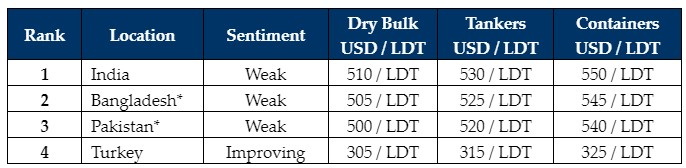

inWeekly Demolition Reports20/11/2023

As Diwali holiday celebrations concluded earlier in the week, Alang Recyclers seems to slowly befiltering back to work amidst declining plates prices, sentiments, and local offerings that remain stagnant.
Unfortunately, this remains the ongoing dilemma across much of the Indian sub-continent ship recycling markets, especially as steel plate prices are yet to gain ground to the extent many in the industry had been hoping for thus far, whilst currencies simultaneously continue to cause ongoing worries for respective domestic markets.
On the flip side, Turkey continues to record minor improvements in steel fundamentals and vessel prices, all while another slow week of sales activity permeates across all of the major ship recycling markets this week, with limited offerings on tonnage or even any market / private deals being reportedly concluded this week, which is subsequently pushing present day sales candidates further down the conclusion timeline, as key players in the industry continue to expect a decent / firmer end to the year and especially early 2024.
Meanwhile, Bulk Carriers and Containers continue to surprisingly trade at a fraction above their current Opex levels, even if recycling prices are at historically (and relatively) firmer levels today. This may perhaps be that these present-day slim earnings on vessel trades are likely not as (financially) troublesome to vessel who Owners who may have had quite the success and finances accumulated across the various sectors during the Covid-19 Pandemic.
Additionally, owing to the severe lack in the availability of U.S. Dollar reserves in the affected ship-recycling destinations and government mandates introduced to restrict the allocation of dwindling foreign currency reserves on essential items only, which has resulted in domestic banks becoming increasingly unwilling to sanction fresh L/Cs on recycling vessels in Pakistan and Bangladesh
As such, troubling times continue to persist across nearly all of the major ship-recycling locations as Recyclers continue to bid on tonnage, all with the ongoing anticipation of a firmer start to 2024 – particularly if international steel prices are anything to go by!
For week 46 of 2023, GMS demo rankings / pricing for the week are as below.

📄 Download PDF: Ship-recycling-market-insight-week-46-2023-Brighter-Days-Ahead.pdfSource: GMS,Inc. ,https://www.gmsinc.net/gms_new/index.php/web